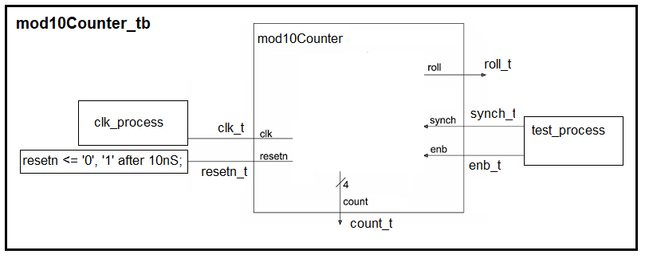

| Lecture | 5 |
| Code | |
| Class Objectives | Testbench, Libraries, signed, unsigned, operator overloading |
Testbench
Before you download your design onto the FPGA, a process called synthesis, you need to verify that your design functions properly. To do this you will simulate your circuit. This simulation must provide inputs to your circuit. We will use a structure called a testbench to accomplish this. Inside the testbench you will:- Create an instance of your circuit, the unit under test (UUT)
- Create an oscillating clock signal
- Control the reset signal
- Control the inputs to your circuit
The ideas in the previous paragraph are captures in the image of the mod10Counter testbench shown below. T

To simplify the following discussion I will call the mod10Counter_tb component the testbench.
- An instance of the mod10Counter is created inside testbench
- The signals inside the testbench which connect to the mod10Counter have a "_t" postfix (added to their end). This "_t" is short hand for "testbench".
- The testbench has no external inputs or outputs. It's entity declaration
look like:
entity mod10Counter_tb is end entity mod10Counter_tb;
- We will have to create a process to manipulate clk_t and another process to manipulate enb_t and synch_t. The code to manipulate reset_t is shown in the diagram.
- assigns clk_t to 0,
- waits 5ns,
- assigns clk_t to 1,
- waits 5ns and then
- ends.
1. clk_process: process 2. begin 3. clk_t <= '0'; 4. wait for 5nS; 5. clk_t <= '1'; 6. wait for 5nS; 7. end process;The clock generated in this process has a period of 10ns. Keep this in mind when you examine the code to generate the enb_t and synch_t signals in the following test_process.
test_process: process
begin
enb_t <= '1';
synch_t <= '0';
wait for 100nS;
enb_t <= '0';
synch_t <= '0';
wait for 10nS;
enb_t <= '1';
synch_t <= '0';
wait for 20nS;
enb_t <= '0';
synch_t <= '0';
wait for 10nS;
enb_t <= '0';
synch_t <= '1';
wait for 10nS;
enb_t <= '1';
synch_t <= '0';
wait;
end process;
The last statement in the process is wait;. A wait statement
with no for modifier creates an infinite delay. This causes the
test cases in the process to run a single time.
The pattern of test signals in this proces may look familiar; it's the same input pattern that we used in our last lecture to check that we understood the behavior of the mod10Counter. This timing diagram is shown below.
The reset signal is given in the testbench image above and holds the reset_t signal low through a positive edge of the clock and raises the reset signal on a negative edge of the clock.
Simulation
Its been a long time coming, let's discuss simulating our VHDL code. There are a lot of tool-specific mouse-clicks, project configurations, and error message that we could cover here. But, for the time being I'll skip most of this and focus on the major steps.After launching the simulator from the tool, you will need to decide which signals to view on the timing diagram. You will almost always put the UUT entity signals on the timing diagram. You will need to define the color of the signal and the radix. Both of these make verification easier. Later in the semester, we will use a TCL script to automate this process, but for the first lab, you will do this manually.
The following shows the timing diagram for my mod10Counter. Does this output look correct?
Libraries
Up to this point we have used STD_LOGIC_1164 library to define logic values and logical operators. To get all this capability, we need to include the following two lines at the top of your file.library IEEE; use IEEE.STD_LOGIC_1164.all;Let's look at a few excerpts from the contents of the STD_LOGIC_1164 library. You can see the entire contents at this link.
std_logic_vector
The datatype that we have been using for our logic values is fully revealed on line 56. You might have noticed a "U" for the value of currentCount in the previous simulation output. Look at the definition of std_logic below and you will get an interpretation for this output. Note that std_ulogic is defined as std_logic on line 87.
line 56:
TYPE std_ulogic IS ( 'U', -- Uninitialized
'X', -- Forcing Unknown
'0', -- Forcing 0
'1', -- Forcing 1
'Z', -- High Impedance
'W', -- Weak Unknown
'L', -- Weak 0
'H', -- Weak 1
'-' -- Don't care
);
Note that the std_logic type has 9 different values. This is the real reason
that your when/else statements should use a final unconditional else
statement so that every unspecified, weird, combination of the remaining
7 std_logic values is covered.
Operator Overloading
Looking at the first hundred lines you will see several different definitions for the function AND, shown below. Note, you can get Chrome to show line numbers by typing Ctrl-u.line 106: FUNCTION "and" ( l : std_ulogic; r : std_ulogic ) RETURN UX01; line 117: FUNCTION "and" ( l, r : std_logic_vector ) RETURN std_logic_vector; line 118: FUNCTION "and" ( l, r : std_ulogic_vector ) RETURN std_ulogic_vector;The AND function is said to be overloaded because there are several different functions called AND. The choice of which AND function is used depends on the datatype of the arguments to AND. For example, if you write the CSA c <= a and b. and a and b have type std_logic_vector, then the AND defined on line 117 will be used to evaluate the result.
Truth Tables
While a bit academic, this library tells us how the AND function (and all the other logic operators) works with the 9 different values available to std_logic. For example say you are evaluating the CSA c <= a and b where a, b, and c are std_logic. Let a be 'U' and b be '1', what value will c assume? Go to the column U and the row 1 to find the answer; its 'U'. Note that the table is symmetric about its major diagonal because the AND operator has the commutative property.
Line 306:
-- truth table for "and" function
CONSTANT and_table : stdlogic_table := (
-- ----------------------------------------------------
-- | U X 0 1 Z W L H - | |
-- ----------------------------------------------------
( 'U', 'U', '0', 'U', 'U', 'U', '0', 'U', 'U' ), -- | U |
( 'U', 'X', '0', 'X', 'X', 'X', '0', 'X', 'X' ), -- | X |
( '0', '0', '0', '0', '0', '0', '0', '0', '0' ), -- | 0 |
( 'U', 'X', '0', '1', 'X', 'X', '0', '1', 'X' ), -- | 1 |
( 'U', 'X', '0', 'X', 'X', 'X', '0', 'X', 'X' ), -- | Z |
( 'U', 'X', '0', 'X', 'X', 'X', '0', 'X', 'X' ), -- | W |
( '0', '0', '0', '0', '0', '0', '0', '0', '0' ), -- | L |
( 'U', 'X', '0', '1', 'X', 'X', '0', '1', 'X' ), -- | H |
( 'U', 'X', '0', 'X', 'X', 'X', '0', 'X', 'X' ) -- | - |
);
std_logic_unsigned
For all its power, the STD_LOGIC_1164 library does not support numerical values and numerical operations like addition, and comparisons. You can see examples of these two operations in the genericAdder.vhd and genericComparator.vhd basic building blocks. Open these files and you will see that they both include use IEEE.STD_LOGIC_UNSIGNED.ALL;. The STD_LOGIC_UNSIGNED library supports operations like addition and magnitude comparisons on STD_LOGIC_VECTORs treated as unsigned binary numbers. You can inspect the contents of this library at this link.Converting integers to STD_LOGIC_VECTORS
There are times when it will be handy to convert a decimal number into a STD_LOGIC_VECTOR. For example, perhaps you would like to define the active width of a 1280x720 monitor in your VHDL file.In order to do this, you will need to include "use IEEE.NUMERIC_STD.ALL;" at the top of your file (along with the other includes). This library gives you access to the "to_unsigned" function given in the code snippet below. Then inside your VHDL architecture, before the "begin" statement, include the following code:
constant H_ACTIVE : STD_LOGIC_VECTOR(11 downto 0) := std_logic_vector(to_unsigned(1280, 12));This line of code is pretty complex, so let's take a moment to look it over. The keyword constant does what you'd expect, it makes H_ACTIVE an 12-bit constant in your program. The right hand side of the ":=" assignment operator creates the 12-bit value for 1280 using the "to_unsigned" operator and then converts this into a STD_LOGIC_VECTOR.
This is a pretty handy code-snippet that you may want to use later on.